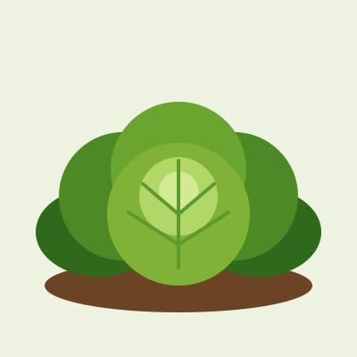
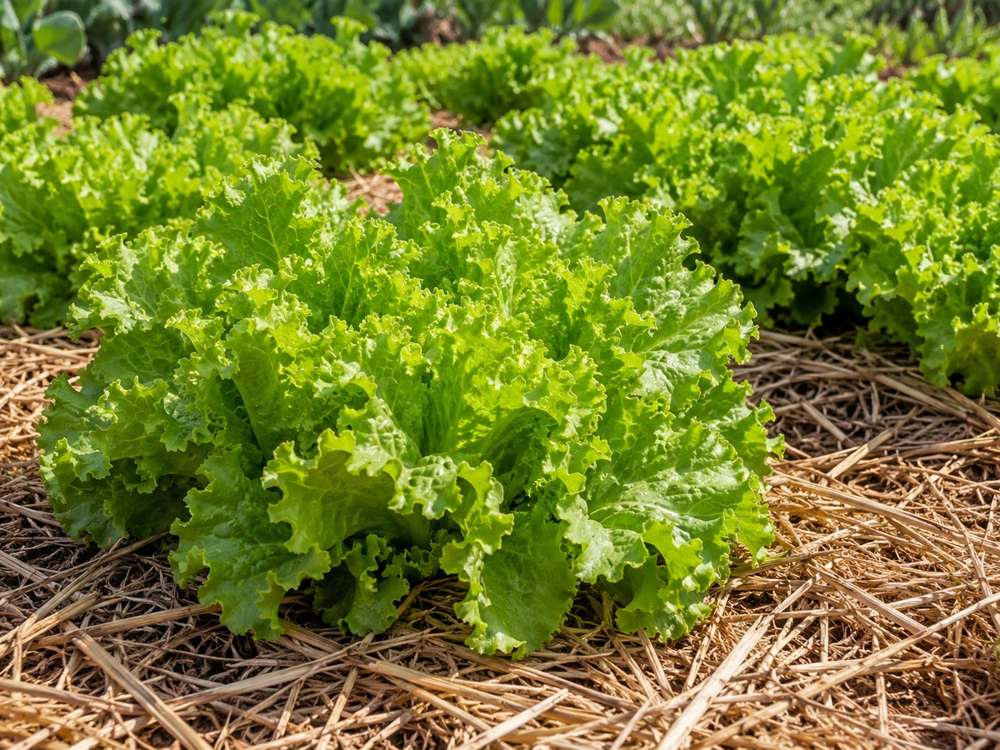

Ficha rápida
Folhosa
- Luz
- De 4 a 6 horas de sol por dia. No calor forte, gosta de sombra à tarde.
- Água
- Regas leves e frequentes. O solo fica úmido, nunca encharcado.
- Espaçamento
- 25 a 30 cm entre plantas.
- Clima
- Prefere temperaturas amenas. Com calor intenso, a planta solta flor e as folhas ficam amargas.
- Como plantar
- Semear em copinho ou bandeja e transplantar, ou comprar mudas.
- Colheita
- Cerca de 30 a 60 dias depois do transplante, conforme a variedade.


Imagem ilustrativa gerada por IA.imagens/alface.jpg no lugar desta.Como plantar
- Semeie em copinhos ou bandeja com terra fofa e um pouco de composto. Cubra as sementes com uma camada fina de terra.
- Mantenha úmido e na sombra clara até as plantinhas nascerem.
- Transplante quando a muda tiver de 4 a 5 folhas, de preferência no fim da tarde.
- Plante a 25 a 30 cm de distância e regue logo em seguida.
Cuidados
- Regar de manhã, na base da planta, sem molhar demais as folhas.
- Cobrir o solo com palha ou folhas secas.
- Tirar as ervas daninhas.
- Procurar furos nas folhas, lesmas e caracóis toda semana.
Colheita
Colha as folhas de fora aos poucos, ou arranque a planta inteira pela base quando a cabeça estiver cheia. O melhor horário é de manhã, com as folhas bem hidratadas.
Plante um pouco de alface a cada 2 ou 3 semanas. Assim a horta não fica sem folhas de uma vez só.
Informações gerais de referência. Datas e tempos mudam com a região, a estação e a variedade.